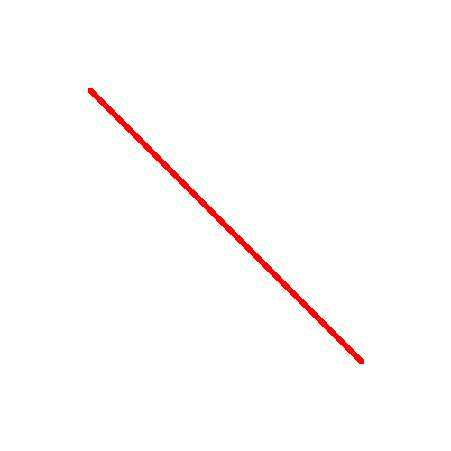
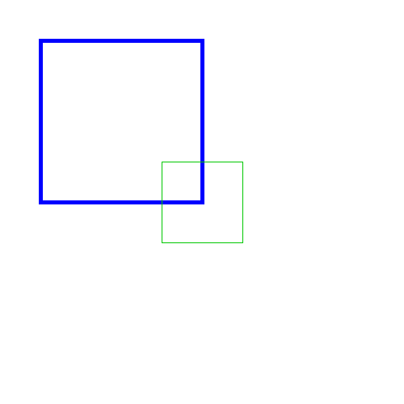

Lab 3: Drawing Shapes with Aggregation And Inheritance (6 Points)
Chris Tralie
Overview / Logistics
The purpose of this lab is to give you practice with the class declarations, aggregation, and inheritance with a visual application of drawing different types of shapes.
Inheritance will come into play when you create new shapes, as every shape will inherit from the provided Shape class so that they have common, linked methods.
Aggregation will come into play, because the new shape classes you're making will contain LineSegment objects.
Learning Objectives
- Manipulate
public,private, andprotectedvariables/methods in classes - Separate out class specification from implementation between header files and cpp files, respectively
- Leverage code sharing between parent classes and child classes
- Use multiple classes together in concert to accomplish a task, including aggregation
Programming Task
You can obtain the starter code by typing
git clone --recursive https://github.com/ursinus-cs174-f2022/Lab3_ShapesInheritance.git
In this lab, you will design classes to draw different 2D shapes on an image. There is a superclass called Shape which stores the thickness with which to draw the shape and the color to use when drawing the shape, as well as setter methods for these two variables. You should create a child class of this class for each new shape that you draw. Every shape you draw should be made up of a series of line segments.
There are three shell methods provided in the Shape class which you should override in all of your shapes
-
void draw(SimpleCanvas* canvas): A method that draws the shape to a particular canvas -
float getArea(): A method to return the area of this shape -
string toString(): A method that returns a string with information about this shape
You can test your code by putting things in driver.cpp, which contains a main method that you can run. You can see the results by opening the image that's saved when running your code.
Finally, be mindful of style as you are coding this!
Point (Given Example)
The simplest thing we can draw is a point. Have a look at the provided Point class in Shapes.cpp and Shapes.h. Objects of this type will be used in the LineSegment class, and you may also want to use them in your classes.
Line Segment (Given Example)
Study the LineSegment class that was provided with the code Shapes.h and Shapes.cpp, and notice how it extends from the Shape class and aggregates the Point class. You will be doing similar things in the shapes below. You should also use objects of the LineSegment class in the draw methods for your shapes. For instance, a triangle can be drawn with three line segments.
As an example of how to use this class, consider the code below, which is currently in the main of driver.cpp
This will print out the following
And it will draw a picture that looks like this.

Task 1: Triangle (1.5 Points)
Create a class called Triangle which takes in 3 points in the constructor, and which then stores three line segments as private variables (aggregation). Use the methods of the line segments when computing the area of the triangle and when drawing it. Be sure to update your makefile so you can build things more easily, and be sure to pass along the correct color and thickness when drawing the line segments
To compute the area of a triangle, you can use Heron's formula. If a, b, and c are the three lengths of the triangle, then define the semi-perimeter as
\[ s = \frac{a+b+c}{2} \] Then, the area of the triangle can be computed as \[ A = \sqrt{ s(s-a)(s-b)(s-c) } \]
As an example, below is a picture of a triangle with points (100, 400), (400, 400), (250, 100). It should have an area of 45000, and the string it returns should be
Below is a snippet that initialized this in the driver
Task 2: Square (1.5 Points)
Create a class called Square which stores the center of the square and the length of its sides. Recall that the area of a square is its side length squared (hence the name "square"). As with the triangle, you should store private variables for LineSegment objects for each side.
Below is an example of a blue square of thickness 4 centered at (150, 150) with a side length of 200 and a green square of thickness 1 centered at (250, 250) with a side length of 0.3.
Below is a snippet that initialized this in the driver
Task 3: Circle (1.5 Points)
Create a class called Circle which stores the center of a circle and its radius. Recall that the area of a circle of radius r is
\[ \pi r^2 \]
A circle would require an infinite amount of line segments to draw properly, but you can draw an approximate circle as a regular polygon with many sides. You can specify the number of sides to draw as a parameter to the constructor. If you have N sides for a circle of radius r centered at (cx, cy), then you can generate the coordinates of the ith point as
\[ x = cx + r* \cos \left( \frac{2 \pi i}{N} \right) \]
\[ y = cy + r* \sin \left( \frac{2 \pi i}{N} \right) \]
Then connect these points with line segments in a loop to form an approximate circle drawing. You can use cos, sin, and M_PI in math.h to help you (NOTE: if it tells you M_PI is undefined, just define a constant 3.141 for pi).
Below is an example of drawing two circles with this class.
The first circle is blue with a thickness of 4, centered at (150, 150) with a radius of 100, using 15 line segments.
The second circle is orange (rgb(255, 165, 0)) with a thickness of 2, centered at (350, 350) with a radius of 50, using 100 line segments.
Task 4: Putting It All Together (1.5 Points)
Fill in some code in driver.cpp to draw at least one of each shape you've created before your final submission. You may actually want to make an interesting drawing, but that's not required here.
Extra Credit: Friend Classes
For up to one extra point, use friend classes in an appropriate way to make your code more succinct. Feel free to modify anything in Shapes.h in the process of doing this if it helps.